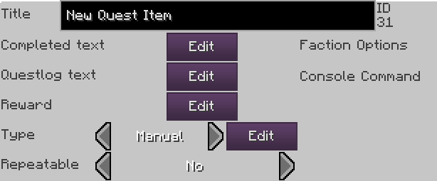
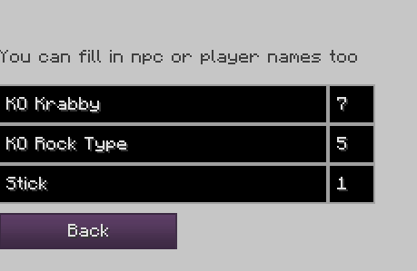
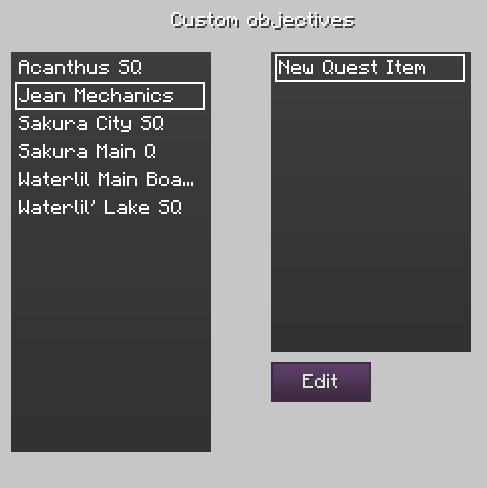
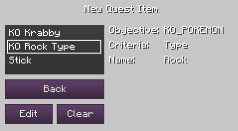
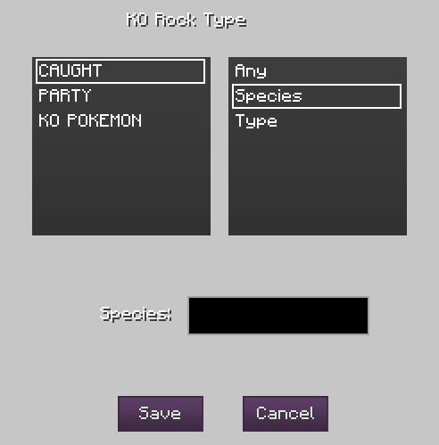

| Command name |
Command result |
| /pequest |
Opens the Essentials quests menu. |
Pixelmon Essentials adds multiple new Quest Objectives that fit what you would want for a Pixelmon experience to the Custom NPCs system. To be able to use the Pixelmon Essentials objectives, you need to first create the quest as a manual quest in the standard Custom NPCs system. This is what it looks like in the NPC Wand:

After setting the quest as Manual, you need to set the quest's objectives by clicking the edit button next to it. In there, you can change the objectives' names and quantities.

Once you've done that, you can add your custom objectives in the Essentials Quest menu. To open it, use /pequest. Once in there, you'll see every Quest Category with a Manual Quest, and selecting a category will show you every Manual Quest in that category.

After selecting the quest, you'll be brought to the Objective selection screen.

and set its custom objective, or remove it if it already has one. If it already has an objective, you don't need to remove it in order to replace it. Once you select your objective and pick edit, you'll be brought to this screen, where you can pick the objective from the list:

There's 3 different types of quest objectives, along with 3 filter types, that apply to all of those objectives:
| Caught |
Checks if the specified filter is registered as caught enough times in the dex. If species is specified as the filter, the objective will always be filled to the max progression as long as it's registered in the dex, not matter the number it's set to. |
| Party |
Checks if the specified filter is present in the player's party. |
| KO Pokémon |
Pretty self explanatory. Only counts if it's a wild Pokémon. |
And here are the different filter types available:
| Any |
Anything will increase the objective's progress. For example, a KO quest with this will work pretty much the same way as charging an orb for the legendary birds. |
| Species |
Will only increase the progress of a quest if the target is a specific species. |
| Type |
Will increase progress of a quest as long as the target is of that type. |
Anything else that would be useful to know?
Every custom objective is saved in the Essentials folder, in the file "Quests.json". If you want to back them up or edit them while offline, you can do it that way.